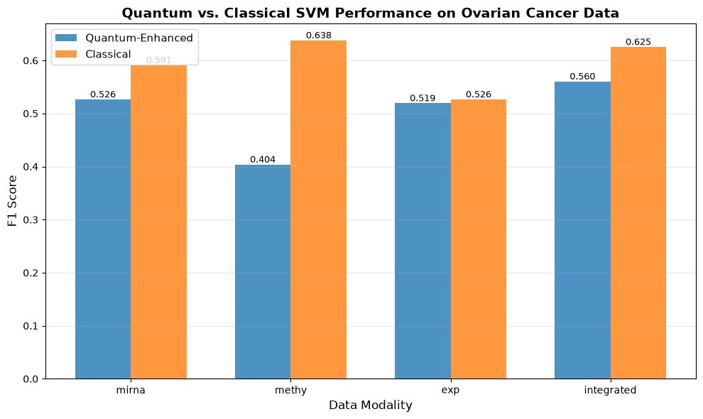

Projected Quantum Kernel (PQK) Tutorial: Ovarian Cancer Survival Prediction#
Overview#
This tutorial demonstrates how to use Projected Quantum Kernels (PQK) for predicting 3-year survival in ovarian cancer patients using multi-omics data. PQK is a quantum machine learning technique that projects classical data into a quantum feature space, potentially capturing complex patterns that classical methods might miss.
What You’ll Learn#
How to prepare multi-omics cancer data for quantum machine learning
How to use PQK to create quantum feature representations
How to compare quantum-enhanced vs. classical SVM performance
Best practices for hyperparameter tuning with quantum kernels
Dataset#
For convenience, we use preprocessed data from the Multi-Omics Cancer Benchmark - TCGA Preprocessed Data.
This tutorial uses ovarian cancer (OV) data with four data modalities:
miRNA expression (
mirna)DNA methylation (
methy)Gene expression (
exp)Integrated multi-omics (
integrated)
Data Source:
OV Cancer Data: https://acgt.cs.tau.ac.il/multi_omic_benchmark/data/ovarian.zip
Other Cancer Types: https://acgt.cs.tau.ac.il/multi_omic_benchmark/download.html
The data will be automatically downloaded and extracted in the next section.
1. Setup and Imports#
First, let’s import all necessary libraries for data processing, quantum computing, and machine learning.
[1]:
import sys
import os
import numpy as np
import pandas as pd
# QBioCode imports
from qbiocode import pqk
# Scikit-learn imports
from sklearn.model_selection import train_test_split, GridSearchCV, StratifiedKFold
from sklearn.decomposition import PCA
from sklearn.preprocessing import StandardScaler
from sklearn.svm import SVC
from sklearn.metrics import f1_score
print("✓ All libraries imported successfully")
<env>/lib/python3.12/site-packages/tqdm/auto.py:21: TqdmWarning: IProgress not found. Please update jupyter and ipywidgets. See https://ipywidgets.readthedocs.io/en/stable/user_install.html
from .autonotebook import tqdm as notebook_tqdm
✓ All libraries imported successfully
1.1. Download and Prepare Data#
Download and extract the ovarian cancer dataset from the Multi-Omics Cancer Benchmark.
[2]:
import os
import zipfile
# Create OV directory if it doesn't exist
os.makedirs('OV', exist_ok=True)
# Define URL for ovarian cancer data (includes survival labels)
data_url = 'https://acgt.cs.tau.ac.il/multi_omic_benchmark/data/ovarian.zip'
zip_filename = 'ovarian.zip'
def download_file(url, filename):
"""Download a file with error handling"""
if os.path.exists(filename):
print(f'✓ Data already downloaded ({filename})')
return True
print(f'Downloading ovarian cancer data from {url}...')
print('This may take a few minutes...')
# Try using requests library (more robust)
try:
import requests
response = requests.get(url, verify=True, timeout=120)
response.raise_for_status()
with open(filename, 'wb') as f:
f.write(response.content)
print(f'✓ Download complete')
return True
except ImportError:
# Fallback to urllib with SSL context
import urllib.request
import ssl
# Create SSL context that doesn't verify certificates (use with caution)
ssl_context = ssl.create_default_context()
ssl_context.check_hostname = False
ssl_context.verify_mode = ssl.CERT_NONE
try:
with urllib.request.urlopen(url, context=ssl_context, timeout=120) as response:
with open(filename, 'wb') as f:
f.write(response.read())
print(f'✓ Download complete')
return True
except Exception as e:
print(f'Error downloading: {e}')
return False
except Exception as e:
print(f'Error downloading: {e}')
return False
# Download the data
print('=' * 60)
print('Downloading Multi-Omics Cancer Benchmark - Ovarian Cancer Data')
print('=' * 60)
success = download_file(data_url, zip_filename)
if not success:
print('\n⚠️ Download failed. Please download manually from:')
print(f' {data_url}')
print(' Place it in the current directory as "{zip_filename}"')
else:
print('\n' + '=' * 60)
print('Extracting Files')
print('=' * 60)
# Extract the zip file
if os.path.exists(zip_filename):
print(f'Extracting {zip_filename}...')
with zipfile.ZipFile(zip_filename, 'r') as zip_ref:
zip_ref.extractall('OV')
print(f'✓ Data extracted to OV/ directory')
print('\n' + '=' * 60)
print('Available Data Files')
print('=' * 60)
# List all downloaded files (including those without extensions)
ov_files = sorted([f for f in os.listdir('OV') if os.path.isfile(os.path.join('OV', f))])
print(f'\nFound {len(ov_files)} files in OV/ directory:\n')
for f in ov_files:
file_path = os.path.join('OV', f)
file_size = os.path.getsize(file_path) / (1024 * 1024) # Size in MB
print(f' - {f:<30} ({file_size:>6.2f} MB)')
print('\n✓ Setup complete! The survival labels are included in the survival file.')
============================================================
Downloading Multi-Omics Cancer Benchmark - Ovarian Cancer Data
============================================================
✓ Data already downloaded (ovarian.zip)
============================================================
Extracting Files
============================================================
Extracting ovarian.zip...
✓ Data extracted to OV/ directory
============================================================
Available Data Files
============================================================
Found 8 files in OV/ directory:
- OV_exp.csv ( 46.75 MB)
- OV_integrated.csv ( 73.64 MB)
- OV_methy.csv ( 25.43 MB)
- OV_mirna.csv ( 1.46 MB)
- exp ( 47.13 MB)
- methy ( 52.73 MB)
- mirna ( 1.98 MB)
- survival ( 0.02 MB)
✓ Setup complete! The survival labels are included in the survival file.
1.2. Process Data and Create Labels#
Process the downloaded multi-omics data and create 3-year survival labels from the survival file.
[3]:
import pandas as pd
import numpy as np
data_path = 'OV/'
# Helper functions
def remove_dup_columns(df):
"""Remove duplicate columns"""
return df.loc[:, ~df.columns.duplicated()].copy()
def standardize_patient_id(patient_id):
"""Standardize patient ID format"""
# Convert to string, uppercase, replace dots with dashes
pid = str(patient_id).upper().replace('.', '-')
# Keep only first 3 parts (TCGA-XX-XXXX)
parts = pid.split('-')
if len(parts) >= 3:
return '-'.join(parts[:3])
return pid
print('=' * 60)
print('Loading Multi-Omics Data')
print('=' * 60)
# Load data files (files have no extension)
ov_methy = pd.read_csv(data_path + 'methy', sep=" ", index_col=0)
print(f'Methylation: {ov_methy.shape}')
ov_exp = pd.read_csv(data_path + 'exp', sep=" ", index_col=0)
# Remove rows with missing values (marked with ?)
ov_exp = ov_exp[~ov_exp.index.astype(str).str.contains('\?')]
print(f'Expression: {ov_exp.shape}')
ov_mirna = pd.read_csv(data_path + 'mirna', sep=" ", index_col=0)
print(f'miRNA: {ov_mirna.shape}')
ov_survival = pd.read_csv(data_path + 'survival', sep="\t")
print(f'Survival data: {ov_survival.shape}')
# Clean survival data
ov_survival.dropna(inplace=True)
ov_survival.drop_duplicates(['PatientID'], keep='last', inplace=True)
print('\n' + '=' * 60)
print('Processing and Aligning Data')
print('=' * 60)
# Standardize column names (patient IDs) in omics data
ov_methy.columns = [standardize_patient_id(col) for col in ov_methy.columns]
ov_exp.columns = [standardize_patient_id(col) for col in ov_exp.columns]
ov_mirna.columns = [standardize_patient_id(col) for col in ov_mirna.columns]
# Remove duplicates after standardization
ov_methy_new = remove_dup_columns(ov_methy)
ov_exp_new = remove_dup_columns(ov_exp)
ov_mirna_new = remove_dup_columns(ov_mirna)
# Standardize clinical sample IDs
ov_survival['PatientID'] = ov_survival['PatientID'].apply(standardize_patient_id)
clinical_samples_set = set(ov_survival['PatientID'])
print(f'Clinical samples: {len(clinical_samples_set)}')
print(f'Sample ID examples (clinical): {list(clinical_samples_set)[:3]}')
print(f'Sample ID examples (methy): {list(ov_methy_new.columns)[:3]}')
# Find overlapping samples across all modalities
overlapping_cols = set(ov_methy_new.columns).intersection(set(ov_exp_new.columns))
print(f'\nSamples in methy ∩ exp: {len(overlapping_cols)}')
overlapping_cols = set(ov_mirna_new.columns).intersection(overlapping_cols)
print(f'Samples in methy ∩ exp ∩ mirna: {len(overlapping_cols)}')
overlapping_cols = list(clinical_samples_set.intersection(overlapping_cols))
print(f'Samples with clinical data: {len(overlapping_cols)}')
if len(overlapping_cols) == 0:
print('\n⚠️ No overlapping samples found!')
print('This might indicate a data format issue.')
print('Please check the sample ID formats above.')
raise ValueError('No overlapping samples - cannot proceed with analysis')
# Filter data to overlapping samples and transpose
ov_methy_ov = ov_methy_new[overlapping_cols].T
ov_exp_ov = ov_exp_new[overlapping_cols].T
ov_mirna_ov = ov_mirna_new[overlapping_cols].T
print(f'\nFiltered shapes (samples × features):')
print(f' Methylation: {ov_methy_ov.shape}')
print(f' Expression: {ov_exp_ov.shape}')
print(f' miRNA: {ov_mirna_ov.shape}')
print('\n' + '=' * 60)
print('Creating Survival Labels')
print('=' * 60)
# Create survival labels (1 = survived, 0 = did not survive)
ov_survival['5y_survival'] = np.ones(ov_survival.shape[0], dtype=int)
ov_survival['3y_survival'] = np.ones(ov_survival.shape[0], dtype=int)
ov_survival['1y_survival'] = np.ones(ov_survival.shape[0], dtype=int)
ov_survival.loc[ov_survival['Survival'] < (1*365)+1, '1y_survival'] = 0
ov_survival.loc[ov_survival['Survival'] < (3*365)+1, '3y_survival'] = 0
ov_survival.loc[ov_survival['Survival'] < (5*365)+1, '5y_survival'] = 0
print('Survival label distribution:')
print(f' 5-year: {dict(ov_survival.groupby("5y_survival").size())}')
print(f' 3-year: {dict(ov_survival.groupby("3y_survival").size())}')
print(f' 1-year: {dict(ov_survival.groupby("1y_survival").size())}')
print('\n' + '=' * 60)
print('Creating Final Datasets')
print('=' * 60)
# Merge survival labels with each omics type
#lets use 3y_survival
def create_dataset(omics_df, survival_df):
"""Merge omics data with survival labels"""
# Reset index to make patient IDs a column
omics_with_id = omics_df.reset_index()
omics_with_id.rename(columns={'index': 'sampleID'}, inplace=True)
# Merge with survival labels
merged = pd.merge(
survival_df[['PatientID', '3y_survival']],
omics_with_id,
left_on='PatientID',
right_on='sampleID',
how='inner'
)
# Keep only sampleID and drop PatientID
merged.drop(['PatientID'], axis=1, inplace=True)
return merged
ov_methy_final = create_dataset(ov_methy_ov, ov_survival)
ov_exp_final = create_dataset(ov_exp_ov, ov_survival)
ov_mirna_final = create_dataset(ov_mirna_ov, ov_survival)
# Create integrated dataset (concatenate all features)
ov_integrated_features = pd.concat([ov_methy_ov, ov_exp_ov, ov_mirna_ov], axis=1)
ov_integrated = create_dataset(ov_integrated_features, ov_survival)
# Save processed datasets
ov_methy_final.to_csv(data_path + 'OV_methy.csv', index=False)
ov_exp_final.to_csv(data_path + 'OV_exp.csv', index=False)
ov_mirna_final.to_csv(data_path + 'OV_mirna.csv', index=False)
ov_integrated.to_csv(data_path + 'OV_integrated.csv', index=False)
print(f'\nSaved datasets (samples × features):')
print(f' - OV_methy.csv: {ov_methy_final.shape}')
print(f' - OV_exp.csv: {ov_exp_final.shape}')
print(f' - OV_mirna.csv: {ov_mirna_final.shape}')
print(f' - OV_integrated.csv: {ov_integrated.shape}')
print('\n✓ Data processing complete! Ready for PQK analysis.')
============================================================
Loading Multi-Omics Data
============================================================
Methylation: (5000, 612)
Expression: (20531, 307)
miRNA: (705, 461)
Survival data: (630, 3)
============================================================
Processing and Aligning Data
============================================================
Clinical samples: 581
Sample ID examples (clinical): ['TCGA-20-1684', 'TCGA-29-1761', 'TCGA-09-1664']
Sample ID examples (methy): ['TCGA-01-0628', 'TCGA-01-0630', 'TCGA-01-0631']
Samples in methy ∩ exp: 295
Samples in methy ∩ exp ∩ mirna: 288
Samples with clinical data: 287
Filtered shapes (samples × features):
Methylation: (287, 5000)
Expression: (287, 20531)
miRNA: (287, 705)
============================================================
Creating Survival Labels
============================================================
Survival label distribution:
5-year: {0: np.int64(475), 1: np.int64(127)}
3-year: {0: np.int64(325), 1: np.int64(277)}
1-year: {0: np.int64(124), 1: np.int64(478)}
============================================================
Creating Final Datasets
============================================================
Saved datasets (samples × features):
- OV_methy.csv: (295, 5002)
- OV_exp.csv: (295, 20533)
- OV_mirna.csv: (295, 707)
- OV_integrated.csv: (295, 26238)
✓ Data processing complete! Ready for PQK analysis.
2. Helper Functions#
We define utility functions for hyperparameter grid generation and model evaluation.
[4]:
def declare_hyperparams(param_list):
"""
Generate a comprehensive hyperparameter search space for SVM.
This function creates a wide range of C and gamma values spanning
multiple orders of magnitude to ensure thorough hyperparameter exploration.
Args:
param_list (list): Initial parameter list (can be empty)
Returns:
list: Extended parameter list with values from 0.001 to 9000
"""
param_list.extend([x * 0.001 for x in range(1, 10, 2)]) # 0.001 to 0.009
param_list.extend([x * 0.01 for x in range(1, 10, 2)]) # 0.01 to 0.09
param_list.extend([x * 0.1 for x in range(1, 10, 2)]) # 0.1 to 0.9
param_list.extend(list(range(1, 10, 2))) # 1 to 9
param_list.extend([x * 10 for x in range(1, 10, 2)]) # 10 to 90
param_list.extend([x * 100 for x in range(1, 10, 2)]) # 100 to 900
param_list.extend([x * 1000 for x in range(1, 10, 2)]) # 1000 to 9000
return param_list
def run_model(model, x_train, x_test, y_train, y_test,
param_grid, cv, verbose=1, n_jobs=-1, scoring='f1_weighted'):
"""
Train and evaluate an SVM model with grid search cross-validation.
Args:
model: Scikit-learn classifier (e.g., SVC)
x_train, x_test: Training and test features
y_train, y_test: Training and test labels
param_grid (dict): Hyperparameter grid for search
cv: Cross-validation strategy
verbose (int): Verbosity level
n_jobs (int): Number of parallel jobs (-1 uses all cores)
scoring (str): Scoring metric for optimization
Returns:
float: F1 score on test set
"""
# Perform grid search with cross-validation
grid_search = GridSearchCV(
model,
param_grid,
cv=cv,
verbose=verbose,
n_jobs=n_jobs,
scoring=scoring
)
grid_search.fit(x_train, y_train)
best_model = grid_search.best_estimator_
print(f"Best parameters: {grid_search.best_params_}")
print(f"Best CV score: {grid_search.best_score_:.4f}")
# Evaluate on test set. SVC.score() returns *accuracy*, not F1 -- reporting it
# under an F1 label (and storing it in an F1_ column, the summary CSV and the
# plot) also contradicted the search above, which selects on 'f1_weighted'.
# Score the held-out set with the same metric the search optimised.
y_pred = best_model.predict(x_test)
test_f1 = f1_score(y_test, y_pred, average='weighted') # matches scoring='f1_weighted'
print(f"Test F1 score: {test_f1:.4f}\n")
return test_f1
print("✓ Helper functions defined")
✓ Helper functions defined
3. Configuration#
Set up the experimental parameters for PQK and classical SVM.
[5]:
# PCA configuration - reduces data to match number of qubits
n_components = 10
# PQK quantum backend configuration
pqk_args = {
'seed': 1234,
'backend': 'simulator', # Use 'ibm_quantum' for real quantum hardware
}
# SVM hyperparameters
kernel_types = ['linear', 'poly', 'rbf', 'sigmoid']
# Generate hyperparameter search space
C_range = declare_hyperparams([])
gamma_range = declare_hyperparams(['auto', 'scale'])
# 'gamma' is ignored by SVC when kernel='linear', so sweeping it there refits the
# same 35 models 37 times: 1,260 of the 5,180 combinations were exact duplicates,
# and a linear winner reported a meaningless best gamma. A list of grids applies
# gamma only to the kernels that read it -- the same search space in 3,920 fits.
param_grid = [
{'kernel': ['linear'], 'C': C_range},
{'kernel': [k for k in kernel_types if k != 'linear'],
'C': C_range, 'gamma': gamma_range},
]
# Cross-validation strategy
cv = StratifiedKFold(n_splits=5, shuffle=True, random_state=42)
print(f"Configuration:")
print(f" - PCA components: {n_components}")
print(f" - C values: {len(C_range)}")
print(f" - Gamma values: {len(gamma_range)}")
print(f" - Kernel types: {kernel_types}")
print(f" - CV folds: 5")
print(f" - Grid combinations: {sum(len(g['C']) * len(g.get('gamma', [None])) * len(g['kernel']) for g in param_grid)}")
Configuration:
- PCA components: 10
- C values: 35
- Gamma values: 37
- Kernel types: ['linear', 'poly', 'rbf', 'sigmoid']
- CV folds: 5
- Grid combinations: 3920
4. Main Experiment Loop#
Process each data modality: load data, preprocess, apply PQK, and compare quantum vs. classical SVM.
[6]:
# Store results for all data types
results_dict = {}
# Process each omics data type
data_types = ['mirna', 'methy', 'exp', 'integrated']
for data_type in data_types:
print("=" * 80)
print(f"Processing: {data_type.upper()}")
print("=" * 80)
# Load data
df = pd.read_csv(f'OV/OV_{data_type}.csv')
print(f"Dataset shape: {df.shape}")
# Extract features and labels
samples = df['sampleID'].tolist()
y = np.asarray(df['3y_survival'])
X = df.drop(columns=['sampleID', '3y_survival']).values
print(f"Class distribution: {np.bincount(y)}")
# Train-test split (stratified to maintain class balance)
X_train, X_test, y_train, y_test = train_test_split(
X, y, test_size=0.2, stratify=y, random_state=42
)
# Dimensionality reduction with PCA
print(f"\nApplying PCA: {X_train.shape[1]} → {n_components} features")
pca = PCA(n_components=n_components)
X_train_pca = pca.fit_transform(X_train)
X_test_pca = pca.transform(X_test)
explained_var = pca.explained_variance_ratio_.sum()
print(f"Explained variance: {explained_var:.2%}")
# Standardization (zero mean, unit variance)
scaler = StandardScaler()
X_train_scaled = scaler.fit_transform(X_train_pca)
X_test_scaled = scaler.transform(X_test_pca)
# Apply Projected Quantum Kernel
print("\n" + "-" * 40)
print("Applying Projected Quantum Kernel...")
print("-" * 40)
X_train_quantum, X_test_quantum = pqk(
X_train_scaled,
X_test_scaled,
args=pqk_args,
store=False,
encoding='ZZ', # ZZ feature map
entanglement='pairwise', # Pairwise qubit entanglement
reps=8 # 8 repetitions of the feature map
)
print(f"Quantum projection shape: {X_train_quantum.shape}")
# Train and evaluate quantum-enhanced SVM
print("\n" + "=" * 40)
print("QUANTUM-ENHANCED SVM")
print("=" * 40)
svc_quantum = SVC()
f1_quantum = run_model(
model=svc_quantum,
x_train=X_train_quantum,
y_train=y_train,
x_test=X_test_quantum,
y_test=y_test,
param_grid=param_grid,
cv=cv
)
# Train and evaluate classical SVM (baseline)
print("=" * 40)
print("CLASSICAL SVM (Baseline)")
print("=" * 40)
svc_classical = SVC()
f1_classical = run_model(
model=svc_classical,
x_train=X_train_scaled,
y_train=y_train,
x_test=X_test_scaled,
y_test=y_test,
param_grid=param_grid,
cv=cv
)
# Store results
results_dict[data_type] = [f1_quantum, f1_classical]
# Print comparison
improvement = ((f1_quantum - f1_classical) / f1_classical) * 100
print("\n" + "*" * 80)
print(f"RESULTS SUMMARY - {data_type.upper()}")
print("*" * 80)
print(f"Quantum F1: {f1_quantum:.4f}")
print(f"Classical F1: {f1_classical:.4f}")
print(f"Improvement: {improvement:+.2f}%")
print("*" * 80 + "\n\n")
print("\n" + "=" * 80)
print("ALL EXPERIMENTS COMPLETED")
print("=" * 80)
================================================================================
Processing: MIRNA
================================================================================
Dataset shape: (295, 707)
Class distribution: [167 128]
Applying PCA: 705 → 10 features
Explained variance: 97.16%
----------------------------------------
Applying Projected Quantum Kernel...
----------------------------------------
Quantum projection shape: (236, 30)
========================================
QUANTUM-ENHANCED SVM
========================================
Fitting 5 folds for each of 3920 candidates, totalling 19600 fits
Best parameters: {'C': 9000, 'gamma': 0.03, 'kernel': 'sigmoid'}
Best CV score: 0.6424
Test F1 score: 0.5262
========================================
CLASSICAL SVM (Baseline)
========================================
Fitting 5 folds for each of 3920 candidates, totalling 19600 fits
Best parameters: {'C': 70, 'gamma': 0.07, 'kernel': 'rbf'}
Best CV score: 0.6079
Test F1 score: 0.5911
********************************************************************************
RESULTS SUMMARY - MIRNA
********************************************************************************
Quantum F1: 0.5262
Classical F1: 0.5911
Improvement: -10.97%
********************************************************************************
================================================================================
Processing: METHY
================================================================================
Dataset shape: (295, 5002)
Class distribution: [167 128]
Applying PCA: 5000 → 10 features
Explained variance: 40.23%
----------------------------------------
Applying Projected Quantum Kernel...
----------------------------------------
Quantum projection shape: (236, 30)
========================================
QUANTUM-ENHANCED SVM
========================================
Fitting 5 folds for each of 3920 candidates, totalling 19600 fits
Best parameters: {'C': 70, 'gamma': 'scale', 'kernel': 'sigmoid'}
Best CV score: 0.5800
Test F1 score: 0.4037
========================================
CLASSICAL SVM (Baseline)
========================================
Fitting 5 folds for each of 3920 candidates, totalling 19600 fits
Best parameters: {'C': 50, 'gamma': 0.03, 'kernel': 'rbf'}
Best CV score: 0.5943
Test F1 score: 0.6377
********************************************************************************
RESULTS SUMMARY - METHY
********************************************************************************
Quantum F1: 0.4037
Classical F1: 0.6377
Improvement: -36.69%
********************************************************************************
================================================================================
Processing: EXP
================================================================================
Dataset shape: (295, 20533)
Class distribution: [167 128]
Applying PCA: 20531 → 10 features
Explained variance: 69.37%
----------------------------------------
Applying Projected Quantum Kernel...
----------------------------------------
Quantum projection shape: (236, 30)
========================================
QUANTUM-ENHANCED SVM
========================================
Fitting 5 folds for each of 3920 candidates, totalling 19600 fits
Best parameters: {'C': 0.05, 'gamma': 0.7000000000000001, 'kernel': 'poly'}
Best CV score: 0.5948
Test F1 score: 0.5192
========================================
CLASSICAL SVM (Baseline)
========================================
Fitting 5 folds for each of 3920 candidates, totalling 19600 fits
Best parameters: {'C': 70, 'gamma': 0.03, 'kernel': 'rbf'}
Best CV score: 0.6110
Test F1 score: 0.5262
********************************************************************************
RESULTS SUMMARY - EXP
********************************************************************************
Quantum F1: 0.5192
Classical F1: 0.5262
Improvement: -1.34%
********************************************************************************
================================================================================
Processing: INTEGRATED
================================================================================
Dataset shape: (295, 26238)
Class distribution: [167 128]
Applying PCA: 26236 → 10 features
Explained variance: 68.59%
----------------------------------------
Applying Projected Quantum Kernel...
----------------------------------------
Quantum projection shape: (236, 30)
========================================
QUANTUM-ENHANCED SVM
========================================
Fitting 5 folds for each of 3920 candidates, totalling 19600 fits
Best parameters: {'C': 7, 'gamma': 'scale', 'kernel': 'sigmoid'}
Best CV score: 0.5781
Test F1 score: 0.5601
========================================
CLASSICAL SVM (Baseline)
========================================
Fitting 5 folds for each of 3920 candidates, totalling 19600 fits
Best parameters: {'C': 3000, 'gamma': 0.09, 'kernel': 'rbf'}
Best CV score: 0.6189
Test F1 score: 0.6251
********************************************************************************
RESULTS SUMMARY - INTEGRATED
********************************************************************************
Quantum F1: 0.5601
Classical F1: 0.6251
Improvement: -10.41%
********************************************************************************
================================================================================
ALL EXPERIMENTS COMPLETED
================================================================================
5. Results Analysis#
Compile and visualize the results across all data modalities.
[7]:
# Create results DataFrame
results_df = pd.DataFrame.from_dict(results_dict, orient='index')
results_df.columns = ['F1_Quantum', 'F1_Classical']
results_df['Improvement_%'] = ((results_df['F1_Quantum'] - results_df['F1_Classical']) /
results_df['F1_Classical'] * 100)
# Display results
print("\nFinal Results Summary:")
print("=" * 60)
print(results_df.to_string())
print("=" * 60)
# Save results
results_df.to_csv('PQK_OV_results.csv')
print("\n✓ Results saved to 'PQK_OV_results.csv'")
# Summary statistics
print("\nOverall Statistics:")
print(f" Average Quantum F1: {results_df['F1_Quantum'].mean():.4f}")
print(f" Average Classical F1: {results_df['F1_Classical'].mean():.4f}")
print(f" Average Improvement: {results_df['Improvement_%'].mean():+.2f}%")
print(f" Best performing data: {results_df['F1_Quantum'].idxmax()}")
Final Results Summary:
============================================================
F1_Quantum F1_Classical Improvement_%
mirna 0.526242 0.591067 -10.967430
methy 0.403709 0.637668 -36.689845
exp 0.519209 0.526242 -1.336443
integrated 0.560082 0.625145 -10.407632
============================================================
✓ Results saved to 'PQK_OV_results.csv'
Overall Statistics:
Average Quantum F1: 0.5023
Average Classical F1: 0.5950
Average Improvement: -14.85%
Best performing data: integrated
6. Visualization (Optional)#
Create a bar plot comparing quantum vs. classical performance.
[8]:
import matplotlib.pyplot as plt
# Create comparison plot
fig, ax = plt.subplots(figsize=(10, 6))
x = np.arange(len(results_df))
width = 0.35
bars1 = ax.bar(x - width/2, results_df['F1_Quantum'], width,
label='Quantum-Enhanced', color='#1f77b4', alpha=0.8)
bars2 = ax.bar(x + width/2, results_df['F1_Classical'], width,
label='Classical', color='#ff7f0e', alpha=0.8)
ax.set_xlabel('Data Modality', fontsize=12)
ax.set_ylabel('F1 Score', fontsize=12)
ax.set_title('Quantum vs. Classical SVM Performance on Ovarian Cancer Data',
fontsize=14, fontweight='bold')
ax.set_xticks(x)
ax.set_xticklabels(results_df.index)
ax.legend(fontsize=11)
ax.grid(axis='y', alpha=0.3)
# Add value labels on bars
for bars in [bars1, bars2]:
for bar in bars:
height = bar.get_height()
ax.text(bar.get_x() + bar.get_width()/2., height,
f'{height:.3f}',
ha='center', va='bottom', fontsize=9)
plt.tight_layout()
plt.savefig('PQK_OV_results.png', dpi=300, bbox_inches='tight')
plt.show()
print("✓ Plot saved to 'PQK_OV_results.png'")

✓ Plot saved to 'PQK_OV_results.png'
Key Takeaways#
What We Learned#
PQK Workflow: Successfully applied quantum feature maps to transform classical cancer data into quantum representations
Performance Comparison: Evaluated quantum-enhanced vs. classical SVM across multiple omics data types
Hyperparameter Tuning: Demonstrated comprehensive grid search for optimal model parameters
Best Practices#
Dimensionality Reduction: Use PCA to match data dimensions to available qubits
Data Standardization: Always normalize features before quantum encoding
Cross-Validation: Use stratified k-fold CV to ensure robust performance estimates
Baseline Comparison: Always compare quantum methods against classical baselines
Next Steps#
Experiment with different quantum feature maps (Z, ZZ, Pauli)
Try different entanglement strategies (linear, full, circular)
Adjust the number of repetitions (
reps) parameterTest on real quantum hardware using IBM Quantum
Explore other quantum ML algorithms (QSVC, VQC, QNN)
References#
Questions or Issues? Open an issue on GitHub